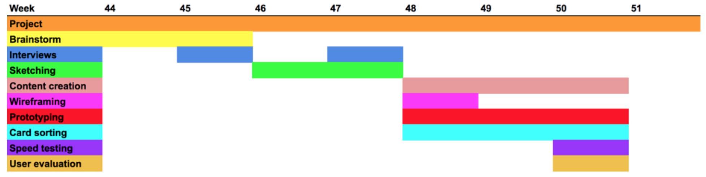
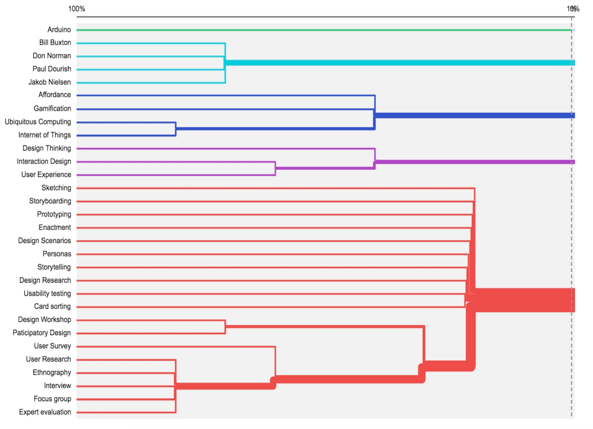
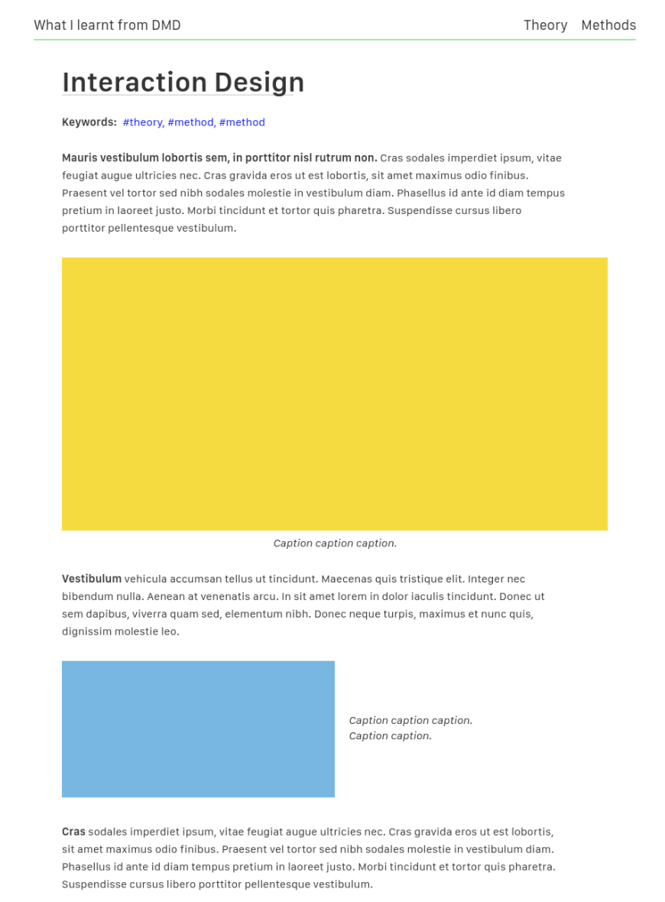

WWLFDMD
ROLE
UX Designer, UI Designer, Content creator, User Researcher
TIMEFRAME
Five weeks
TOOLS
Atomic, Photoshop, Github, vanilla HTML, CSS and JS
TEAM
Group of designers
Background for the project
The field of web-design is rapidly growing and as such, it is vital for emerging designers to acquire a set of skills, methods, theories and knowledge that can help them cater to this need. The Digital Media and Design (DMD) programme does just that. However since the DMD programme on the IT University of Copenhagen (ITU) deals with innovative design processes and newly formed and broad theoretical subjects due to the rapid developing IT-universe, people rarely have a preexisting knowledge of what it might contain. Being former DMD students, we often get asked “what we know.” Many times we have even asked this question ourselves. Three years of dealing with complex subjects often make this question hard to answer precisely; both in regard to ourselves, (future) employers or peers. This problem might not be limited to DMD students as the IT-industry is not the only rapidly developing market. Furthermore, many other BSc programmes deal with complex theoretical knowledge in the same way.
Problem
This poses a problem for ourselves and fellow students enrolled in universities, when we are in the initial phase of projects and are struggling to decide on theoretical and methodical approaches. We have gained knowledge on a wide range of different subjects, and it can be challenging to choose the right approach through memory alone. Furthermore, it can be problematic when communicating to potential employers or peers, when there is a need to express our capabilities gained through a rather young and complex education.
Outcome
What We Learnt From DMD (WWLFDMD) is a portal, a reference work and an encyclopedia with methods, concepts and tools on topics we have learnt through courses on Digital Media and Design. We aim to enable students to simply go back and review previously obtained methods, theoretical frameworks and course insights relatable to the DMD programme. On our website methods and theories are linked with use cases from the industry, academics and from the DMD programme itself to apply a practical and hands-on touch to the complex concepts. All topics - be it a method or a theory - exist on the same level of hierarchy. Navigation between these topics is made effective through tags and links on every content-page.

WWLFDMD - The Interaction Design page
Overall process
In this section I will underline the thoughts and ideas that led us through the process of designing WWLFDMD. It was an original idea and as such, a lot of thoughts went into whether it was the right problem to solve, before figuring out how to solve it. The project spanned across five weeks as a school project, and involves everything from ideation to content creation to development to user evaluation. In the next sections I will show a selection of what I believe were the most important thoughts regarding the project, focusing on the why.
Quick'n'dirty interviews
The purpose of the interviews was to validate (or reject) the idea of a website like WWLFDMD as well as to empathize with the students’ experiences and frustrations regarding the complexity of their degree. Below is a condensed list of the findings of the interviews:
- DMD students have trouble understanding the professional profile of the degree
- DMD students cannot explain their own professional profile coherently until they have finished, or are close to having finalized their degree
- DMD students consider the content of the degree to be very broad and have trouble identifying which course cluster the different classes are within
- DMD students have many different goals with the degree and are unsure what kinds of jobs it will lead to
- DMD students would like to work within UX or digital concept development
- DMD students experience a divergence between their expectations to the professional profile they think will obtain through the degree, and the profile they do obtain.
Follow-up interview
After evaluating the results of the interviews with the students, we set up an interview with the head of the DMD programme Jörn Messeter. We presented the idea of the project and the findings of the interviews to him and probed him about them. We sought to find out whether he, as head of the DMD programme, agreed with our findings and if he he could give us some insight as to why the students might have trouble explaining their professional profile. Initially we prepared an interview guide but we ended up disregarding it and discussing the content of the programme instead. Jörn agreed with our findings regarding the confusion about the professional profile, and stated that it’s hard to figure out how all the courses match until late in the programme. He sent us the document highlighting the four course clusters of the DMD programme which we also used as our limitation stated before.
Content creation
The DMD curriculum includes a vast amount of theories, concepts, design genres, academics and many other types of content. For an informational website about the programme, it is of utmost importance to communicate the content in such a way, that it is understandable for the target group. Thus, the purpose of the content creation process was to figure out how to limit said amount of content, what type of content we are going to use for the prototype and figure out how to deliver the content in a way that fits the scope of the website.
Based on the course clusters of the DMD programme we chose to limit the content of our prototype to the interaction design cluster (figure 1). We then picked out a number of theories, concepts, design genres and methods from this cluster to use as content, so that there would be a connection between them, thus being able to investigate the tag system.
Through the design process we refined the choices made upon pictures and tone of voice (text) with an eye for our target group: Students who want a simple reference work in a light, effective, accessible and formal tone. The tone of voice for the content was chosen based on a test with five former DMD students, where we presented them with the same content in three different tones, ranging from a soft, storytelling tone to a formal and theoretically detailed tone.
They preferred a tone of voice that was in between the formal and informal, and we decided to streamline and deliver our content in this tone. We then researched the content and wrote it accordingly to the preferred tone.
Card sorting
Due to the vast amount of content, it was important to establish a direction for the information architecture, e.g. the top-menu and tag-system of the site in such a way, that it was understandable to the target group. For this purpose we used a card sorting. The card sorting consisted of 30 cards containing headlines about content related to the interaction design cluster, provided by Jörn Messeter (Head of the DMD programme). Since we were in the early stages of development, we chose to do an open card sorting, knowing that the feedback was going to be very complex with this approach.  When more content is added, we would need to structure the content differently. The red grouping (Methods), shows the lowest percentage of agreement. This would be a group that could benefit from subgroups. These subgroups could easily be found or tested with a card sorting, which only focused upon content that would fall under “Methods”. When it comes to IA, it is not only the categorization that matters; the labeling can be just as crucial. Since we chose to do an open card sorting, we received a lot of ideas in terms of what we could label our categories. Thus, the labeling on the menu items on our prototype are labels that some of the participants used, to name similar sortings. In order to conclude that these labels match the average user's mental model, more testing will be necessary.
Mockup & Prototyping
We chose to build a mockup before going into coding and prototyping the design in HTML and CSS. The purpose of the mockup was for us to have a structured starting point, so that we would have a shared, visual understanding of the product going into the coding process.
The mockup was created using Atomic.

While our initial plan was for the mockup to evolve into an interactive prototype, we quickly agreed on the structure, and moved into coding.
While our time with the mockup was brief, it helped create consensus in the group about the visual expression of the page, and meant that we could move into coding from a shared perspective.
Most of our prototyping was done directly in the code editor. Given the fact that we quickly established a page structure, there was no need for shying away from coding, and so an early version of our website was used for prototyping. This was further encouraged by the scope of the project, which should not necessarily be a final product, but rather a showacse for our idea.This way of prototyping directly in the browser has given us an opportunity to quickly iterate on new ideas. Furthermore everyone was been able to edit.
User Evaluation
To test our website we did a micro usability test. This method is similar to a traditional guerrilla usability test but as the name indicates it is a shorter and quicker version. Our approach was as follows:
- Define the audience and their goals
- Create tasks that address those goals
- Get the right people
- Watch them try and perform
We followed the tests up with semi-structured interviews - this was to gain insights to apply to other parts of the user experience; hopefully to make it more desirable and valuable.
The micro usability test was executed with four participants from the target group. Two were presented with the desktop version of WWLFDMD, while the two others used the mobile-version.
The participants were introduced to a task that focused on navigation by locating different pages of content. This sought to test if the participants made use of all the navigational features and understood the navigation signifiers. After the task, the participants were asked about their experience, opinion and general attitude towards the website and its features.
Our tasks showed that our participants mainly navigated through the menu, and one testee had this to say about the navigational options:
"When the tags are shown at the top I’m probably more likely not to click on them, since when I’m finished reading I’ll be at the bottom … hm, but I guess if I was browsing around and just skimming the information, I might use the tags – and actually … It gives a sense of orientation"
Observing the tags being used at least once by 3/4 of the participants our observations indicated also that they wanted to test the different features of the website, instead of using the tags as the intuitive option for navigation.
The IA of our prototype succeeded; there were none of the participants who could not find the information they were looking for under their given menu item. One person argued that the page “User experience” could be placed both under menu item “Concepts” as well as under “Design genres”. The menu item “Concepts” is something that we have had a hard time naming and it was labeled because three of our participants in the card sorting had made a similar group and named it “Concepts”. However this is label that might need further evaluation.
The interview showed that the test subjects found our website valuable, even though the content was limited. They seemed to have a good understanding of what kind of content that would be added. When they were asked if they found the concept of the website valuable one person said:
"I would have liked to have this website when I made a LinkedIn-profile, it is a great tool to summarize what we learned on the bachelor and what my actual qualifications are"
In the same vein another person said:
"It would have been helpful while I was studying, but now that I’m finished with DMD – it would still be awesome to have a look at it whenever i’m writing job applications"
We deemed this a success as it resonates with our problem statement.
Additionally, the prototype succeeded when it came desirability, as our participants were happy with our design and layout choices, and all agreed that it was easy to read:
"I think it looks beautiful. The text is in focus, the font and size of it is a good match for readability. There is a calmness about it but at the same time also a little playful"